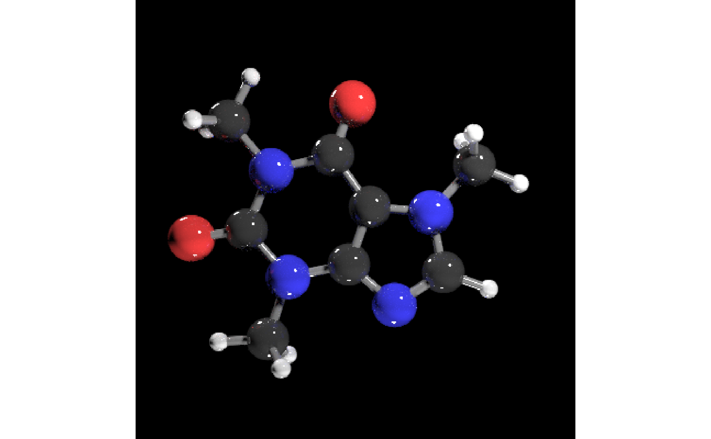
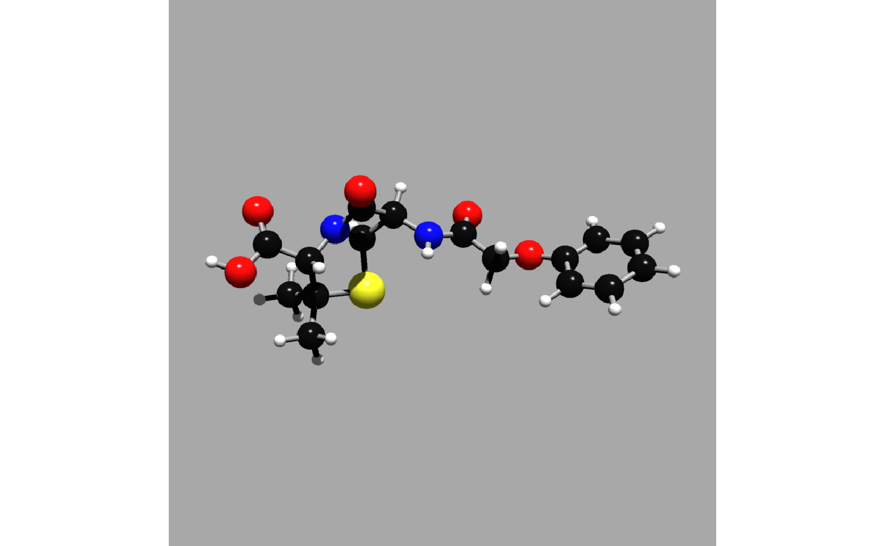
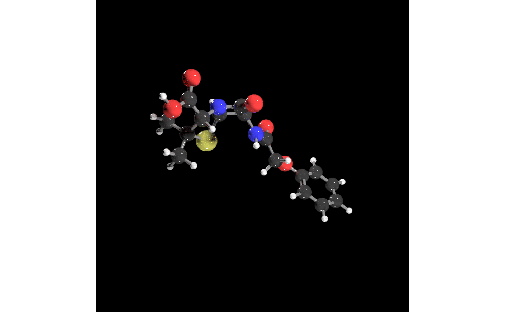

render_model.RdAutomatically plots the molecule with a camera position and field of view that includes the full model. For more control over the scene, pass the scene to `rayrender::render_scene()` and specify the camera position manually. Note: spheres and cylinders in the scene are used to automatically compute the field of view of the scene--adding additional sphere (e.g. with `rayrender::generate_ground()`) will change this calculation. Use `rayrender::render_scene()` instead if this is a problem.
render_model(
scene,
fov = NULL,
angle = c(0, 0, 0),
order_rotation = c(1, 2, 3),
lights = "top",
lightintensity = 80,
...
)| scene | `rayrender` scene of molecule model. |
|---|---|
| fov | Default `NULL`, automatically calculated. Camera field of view. |
| angle | Default `c(0,0,0)`. Degrees to rotate the model around the X, Y, and Z axes. If this is a single number, it will be taken as the Y axis rotation. |
| order_rotation | Default `c(1,2,3)`. What order to apply the rotations specified in `angle`. |
| lights | Default `top`. If `none`, removes all lights. If `bottom`, lights scene with light underneath model. If `both`, adds lights both above and below model. |
| lightintensity | Default `80`. Light intensity. |
| ... | Other arguments to pass to rayrender::render_scene() |
List giving the atom locations and the connections between atoms.
# Generate a scene with caffeine molecule with just the atoms
# \donttest{
get_example_molecule("caffeine") %>%
read_sdf() %>%
generate_full_scene() %>%
render_model()
#Light the example from below as well
get_example_molecule("caffeine") %>%
read_sdf() %>%
generate_full_scene() %>%
render_model(lights = "both")

#Generate a scene with penicillin, increasing the number of samples and the width/height
#for a higher quality render.
get_example_molecule("penicillin") %>%
read_sdf() %>%
generate_full_scene() %>%
render_model(lights = "both", samples=400, width=800, height=800)
#Rotate the molecule 30 degrees around the y axis, and the 30 degrees around the z axis
get_example_molecule("penicillin") %>%
read_sdf() %>%
generate_full_scene() %>%
render_model(lights = "both", samples=400, width=800, height=800, angle=c(0,30,30))

#Add a checkered plane underneath, using rayrender::add_object and rayrender::xz_rect().
#We also pass a value to `clamp_value` to minimize fireflies (bright spots).
library(rayrender)
get_example_molecule("skatole") %>%
read_sdf() %>%
generate_full_scene() %>%
add_object(xz_rect(xwidth=1000,zwidth=1000,y=-4,
material=diffuse(color="#330000",checkercolor="#770000"))) %>%
render_model(samples=400, width=800, height=800, clamp_value=10)

# }